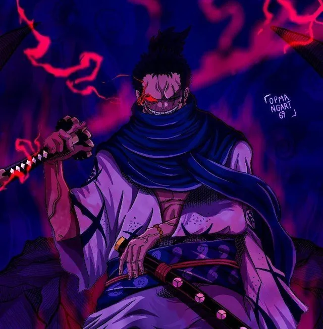

The Strongest One Piece Characters
1
Imu
Debuted in Chapter 906, Episode 885

Imu is the current head of the World Government followed by the 5 strong and respected elders that serve him.
Although Imu's powers remain unknown, Imu-sama still kept up with the legendary figure Sun God Nika who put
his own soul into a fruit, that is later passed on to Joyboy who was later defeated by Imu. Between these
battles Imu was the one that came out victorious while still living for 800 years.
Not much is known about him since he's kept hidden from the rest of the world to maintain the illusion of
freedom, but it is certain that he has devil fruit powers, as he was able to destroy the entire Kingdom of
Lulusia. The community speculates that Imu's awakening might be analogous to Luffy's Gear 5th.
2
Ryuma
Debuted in Episode 342

Ryuma was well-regarded in Wano Country for his immense mastery of swordsmanship. At some point in time
after his death, he came to be known as the "Sword God" (刀神様, Tōjin-sama?) in Wano, with his skills
continuing to be regarded as legendary even centuries after his death.
Ryuma was a powerful Strong Blade (豪剣, Gōken?)-type swordsman whose swordplay resembled a mix of kenjutsu
and battojutsu. He could slice through copper,kill Cyrano (a first-rate swordsman), and an enormous
dragon with little effort.He was renowned as the strongest swordsman of his time,and due to this as
well as his strong belief in protecting others, Ryuma was also called "King," the swordsman who carries the
world's greatest "Warrior's Soul".
3
Rocks D. Xebec
Debuted in Chapter 957, Episode 958

Another individual sharing the Will of D., Rocks D. Xebec (also known as just "Rocks"), the captain of Rocks
Pirates, a prominent group of pirates that maintained the revolting personas like the two formal Yonkos and
Shiki. It took the combined efforts of Monkey D. Garp and Gol D. Roger to defeat the powerful villain in the
series – this is a battle that gave Garp the nickname "Hero of the Marines" because of how difficult it was.
Some theories put forth suggest Dragon is the son of Xebec. As Garp has already clarified that Dragon is his
Son-in-Law, it makes sense due to the similar appearances of Dragon and Xebec. The vicious character is
singularly obsessed with his ambition and power, making him especially dangerous.
4
Gol D. Roger
Voiced by Chikao Ohtsuka, Masane Tsukayama, and Takeshi Kusao

Gol D. Roger, The Pirate King, was the foremost character who unveiled the dark secrets of World Government
and secured the One Piece treasure. Roger was the captain of Roger Pirates, which included Dark King
Rayleigh, Shanks, Buggy, and even Kozuki Oden. It was Gol D. Roger who mentioned Joyboy for the first time.
If it wasn't for his incurable illness, and his wife bearing Ace, Roger would have not been caught by the
Marines. He's remembered for having achieved unbelievable feats, including conquering the Grand Line and
becoming ridiculously wealthy in the process. Due to his illness, fans can't even speculate how emphatic he
actually was. Although he has left a legacy of having started the Golden Age of Pirates, highlighting how
crucial his character is in the popular anime series.
5
Sun God Nika
Debuted in Episode 1040
Nika is the name of a mythical warrior revered as the Sun God by slaves from ancient times and whose
existence is tied to Elbaf mythology. He was first mentioned by Who's-Who, who heard about the legend from a
prison guard during his imprisonment by the World Government.
There exists a Mythical Zoan-type Devil Fruit
called the Hito Hito no Mi, Model: Nika that allows the consumer to gain Nika's traits and abilities. For
unknown reasons, the World Government is extremely interested in this fruit, and has even covered up its
identity by renaming it to the "Gomu Gomu no Mi" such that not even members of the Four Emperors and their
respective crews seem to be aware of its true nature. During the Void Century, this power was held by Joy
Boy, the world's first Pirate who led the Great Kingdom in a Great War against the Twenty Kingdoms.
Currently, the fruit's power is in the possession of Monkey D. Luffy, himself sometimes addressed as
"Nika" or "Sun God".